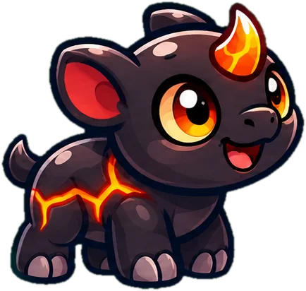

 FireRock
FireRockTap a stage to read its story.
Magmling is a sturdy stocky rhinoceros calf with dark brown hide that has already begun showing faint orange lava-cracks along its flanks. Its single short horn is just beginning to calcify and juts straight forward with cheerful bluntness. It lives near Lava Crater's cooler rim, trotting along the edge and peering down into the glow below without any fear. Guardians say Magmling is the most curious creature in the crater - it touches every hot surface once, never twice, filing the experience carefully away.
Field note: Magmling's horn is already harder than steel at this age - it leaves small circular gouges in basalt rock just by leaning against it.
Lava Crater. Magmling and its family are found in the Lava Crater. See everyone who lives there.
Share a Bond Food that matches its types to become friends. Magmling loves:
A Bond Food is not a trick. It joins your spirit with the Kimuro's spirit, and only when it chooses you.
Print the Kimuro adventure packs: mazes, cards, a board game and Bond Mark medals.
See the printable packs